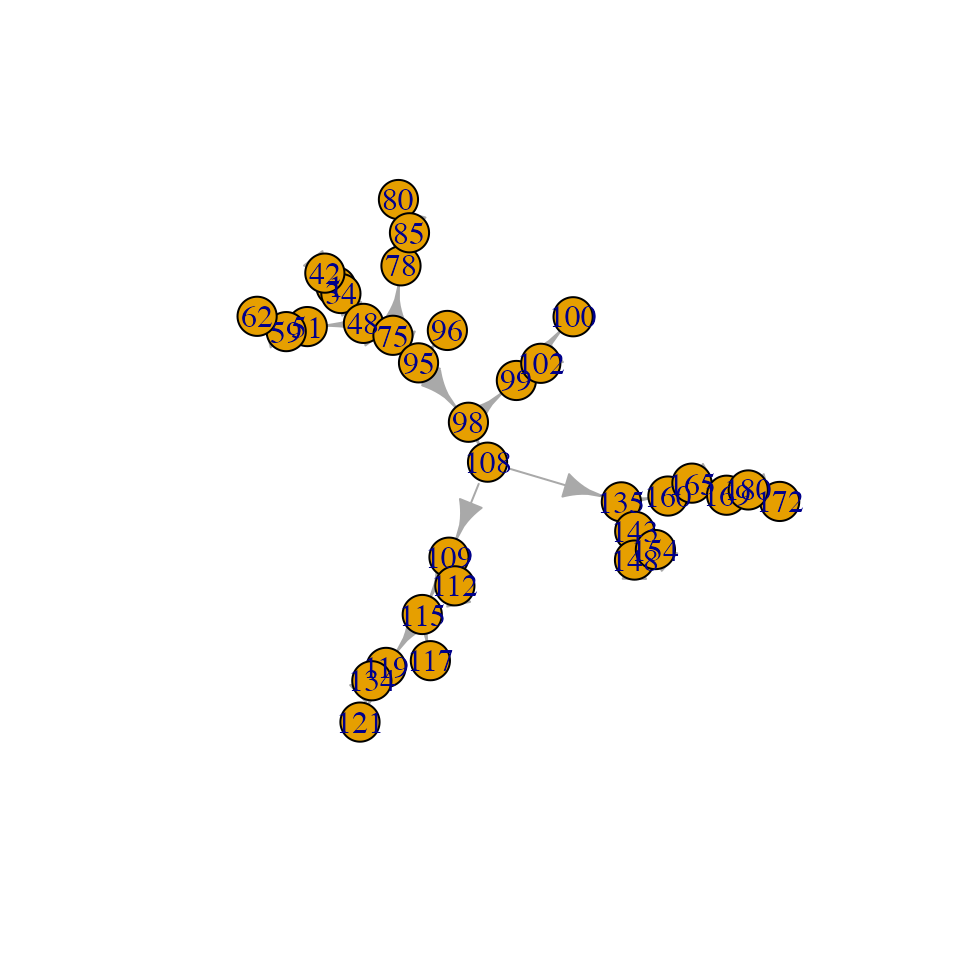
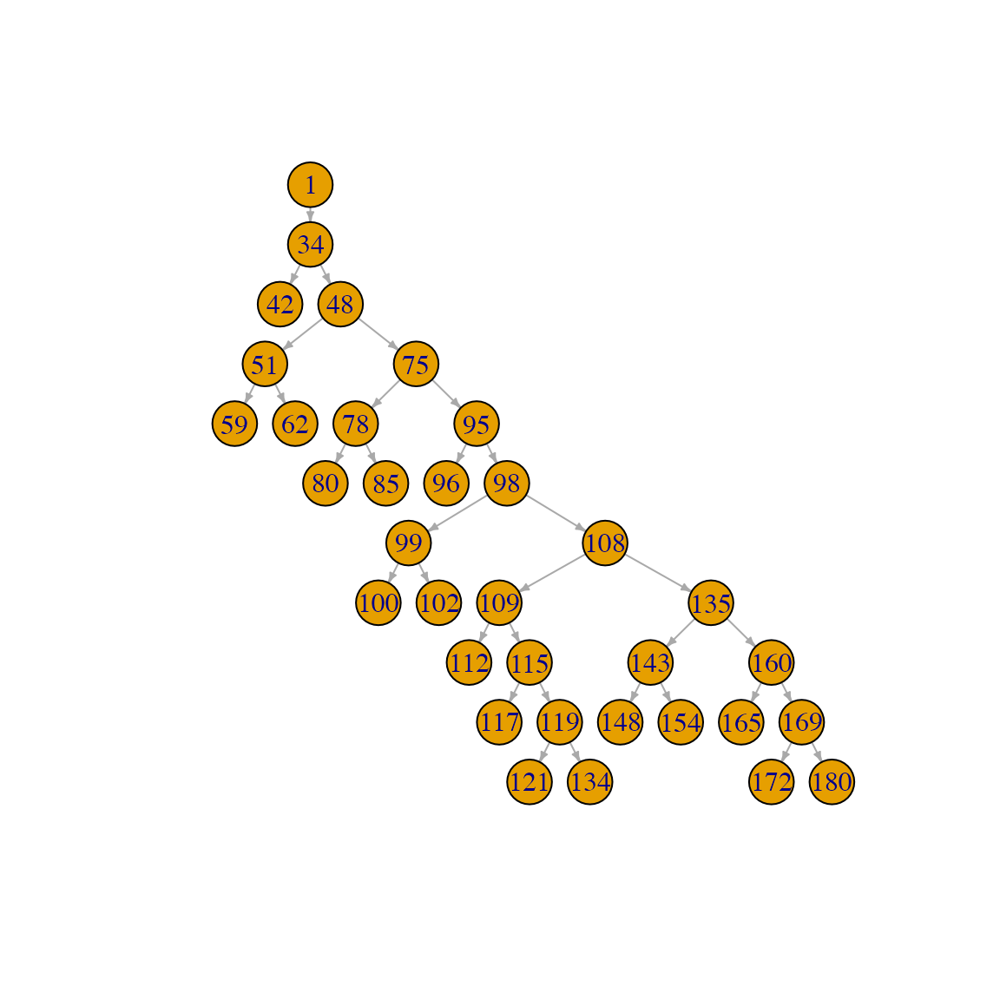
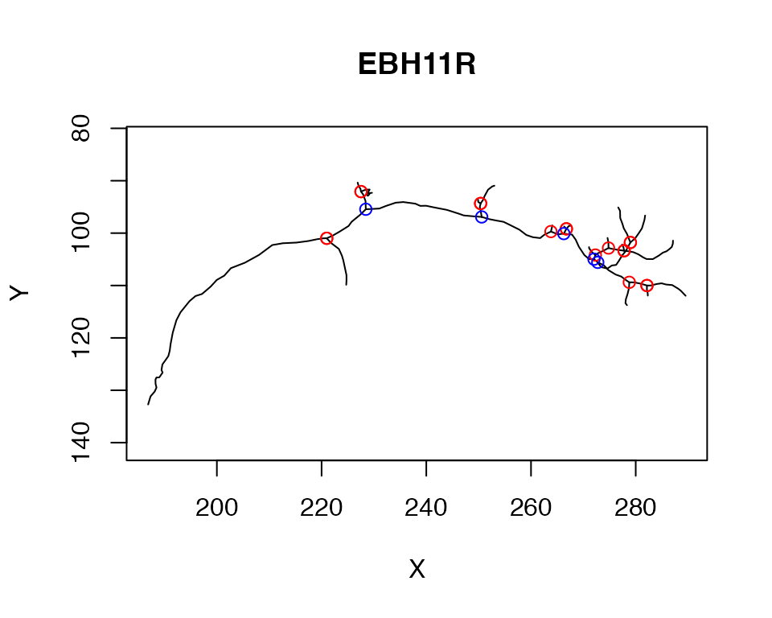

Working with individual neurons as graph structures
Gregory Jefferis
2020-12-11
Source:vignettes/neurons-as-graph.Rmd
neurons-as-graph.RmdIntroduction
Neurons can helpfully be treated as graphs (branching trees) in which nodes connected by edges define the morphology of the neuron. The nat package provides a number of built-in functions that allow you to analyse the branching structure of graphs
https://natverse.github.io/nat/reference/index.html#section-neurons-as-graphs-
or use aspects of the branching structure to manipulate graphs. Examples of such functions include the strahler_order function which calculates the Strahler branch order for each node or segment in the neuron or the spine function that extracts the longest path across the neuron.
More sophisticated analysis and manipulations can be carried out by converting neuron objects into ngraph objects.
Neurons as Graphs
A neuron will typically be a graph in the form of a binary tree. We follow the convention of the Matlab trees toolbox by Hermann Cuntz and colleagues in treating the root (typically the soma) as the origin of the graph and then having directed edges leaving the root.

neuron-as-graph
Nodes will be one of a:
- root
- branch point
- end point
- continuation point
Each node will have a numeric identifier or label (an arbitrary integer stored the in the neuron’s PointNo field that may have come from an external source) as well an index (an integer starting at 1 and increasing without gaps). Although these two identifiers may often be the same, code should never rely on this being the case. In the wild, one frequently encounters cases where e.g. the numeric labels
- have gaps because a neuron was edited
- are not in the same order as the vertices
- have some other significance e.g. are globally unique across all neurons in a database and therefore have large values (which may be challenging for R to to represent give its maxint of 2^31 - 1=2.1474836^{9})
## root nodes segments branchpoints endpoints cable.length
## 1 1 180 33 16 18 297.1763We can extract the points as follows:
rootpoints(n)## [1] 1
branchpoints(n)## [1] 34 48 51 75 78 95 98 99 108 109 115 119 135 143 160 169
endpoints(n)## [1] 1 42 59 62 80 85 96 100 102 112 117 121 134 148 154 165 172 180Segments are unbranched connected sequences of nodes that terminate in a branch point or end point.
Built-in neuron graph functions
We will give a few examples of the use of the built-in functions that treat neurons as graphs.
Strahler Order
The branching structure of a neuron is commonly summarised by calculating the Strahler Order.
n=Cell07PNs[[1]]
so=strahler_order(n)
orders=1:max(so$points)
for (i in orders) {
plot(subset(n, so$points==i), col=i, add = i!=1, boundingbox = boundingbox(n))
} Note the use of multiple calls to
Note the use of multiple calls to plot.neuron using the add=TRUE argument for all but the first plot. Note also the use of the boundingbox argument/function in order to ensure that the plot is set up with appropriate axes for the whole neuron even if only part of it is plotted in the first call to plot.
Spine
You can find the longest path across a neuron using the spine function.
spine has a variety of options that you can use to control the results.
Segment graph
You can use the segmentgraph function to make a simplified representation of the branching structure of the neuron. In this object (which has class igraph associated with the powerful igraph package) each unbranched segment in the original neuron (which might have contained many vertices) is collapsed to a single edge joining the branch points (which are retained).
sg=segmentgraph(Cell07PNs[[1]])
plot(sg)
It can be useful to plot the graph with a tree layout:
plot(sg, layout=igraph::layout_as_tree, edge.arrow.size=.3, vertex.size=15)
Note that the root of the neuron is placed at the top of the plot (point number 1 in the graph above) and that successive branching orders and leaves are placed on levels further down the plot. Note also that the labels on the plot correspond to the identifiers of the points in the original neuron (aka the PointNo field, see first section).
If you need to work with the original identifiers of the points in the segmentgraph object, they are stored as igraph node attributes. You can access them like this:
igraph::V(sg)$label## [1] 1 34 42 48 51 59 62 75 78 80 85 95 96 98 99 100 102 108 109
## [20] 112 115 117 119 121 134 135 143 148 154 160 165 169 172 180
igraph::V(sg)$vid## [1] 1 34 42 48 51 59 62 75 78 80 85 95 96 98 99 100 102 108 109
## [20] 112 115 117 119 121 134 135 143 148 154 160 165 169 172 180label encodes the PointNo column and vid the raw integer index of the point in the node array. If and only if the PointNo identifier is a sequentially increasing integer starting at 1, then these will be identical. The SWC format is a little vague about whether they should indeed be the same, but is normally understood to imply it. However there are many SWC files in the wild that violate this assumption.
You can also use the endpoints() and rootpoints() functions with the segmentgraph objects as well as any function that expects an igraph object. We can use this to find the branchpoints upstream of all end points using the igraph::adjacent_vertices() function. We use mode="all" to handle the situation where the root node is also an end point (i.e. a leaf node).
endpoints(sg)## [1] 1 3 6 7 10 11 13 16 17 20 22 24 25 28 29 31 33 34
ups=unlist(igraph::adjacent_vertices(sg, endpoints(sg), mode='all'))
# this maps the segmentgraph node indices back to indices for the neuron
igraph::V(sg)$vid[ups]## [1] 34 34 51 51 78 78 95 99 99 109 115 119 119 143 143 160 169 169Here we plot those terminal branchpoints in red while internal branches are displayed in blue.
plot(n, WithNodes = F)
terminal_branches=igraph::V(sg)$vid[ups]
other_branches=setdiff(branchpoints(n), terminal_branches)
points(xyzmatrix(n)[terminal_branches,1:2], col='red')
points(xyzmatrix(n)[other_branches,1:2], col='blue')
ngraph objects
The nat package provides a bridge for neurons to the rich cross-platform igraph library. We provide a class ngraph that is a thin wrapper for the igraph class. This looks after things that we might need to know about a neuron (like the 3D coordinates of each node) while still giving access to all of the graph functions in the igraph package.
## [1] "ngraph" "igraph"
g## IGRAPH 331becc DN-- 180 179 --
## + attr: name (v/n), X (v/n), Y (v/n), Z (v/n), diam (v/n)
## + edges from 331becc (vertex names):
## [1] 1-> 2 2-> 3 3-> 4 4-> 5 5-> 6 6-> 7 7-> 8 8-> 9 9->10 10->11
## [11] 11->12 12->13 13->14 14->15 15->16 16->17 17->18 18->19 19->20 20->21
## [21] 21->22 22->23 23->24 24->25 25->26 26->27 27->28 28->29 29->30 30->31
## [31] 31->32 32->33 33->34 34->35 35->36 36->37 37->38 38->39 39->40 40->41
## [41] 41->42 34->43 43->44 44->45 45->46 46->47 47->48 48->49 49->50 50->51
## [51] 51->52 52->53 53->54 54->55 55->56 56->57 57->58 58->59 51->60 60->61
## [61] 61->62 48->63 63->64 64->65 65->66 66->67 67->68 68->69 69->70 70->71
## [71] 71->72 72->73 73->74 74->75 75->76 76->77 77->78 78->79 79->80 78->81
## + ... omitted several edgesYou can use functions such as
igraph::diameter(g)## [1] 89to find the length of the longest path across the neuron. This is defined in terms of the number of intervening nodes. You can also make a graph in which the edge weights are the euclidean distance between the connected 3D nodes:
## [1] 186.0859This gives you the longest path length (geodesic) across the graph in units of µm in this case.
Note that although you can do library(igraph), it adds a lot of functions to the search path, some of which have name clashes, so I often just use the package name (igraph::) prepended to the function that I want to call.
Walking along ngraph objects
You can use the graph representation of neurons e.g. to find the path between nodes.
g=as.ngraph(Cell07PNs[[1]], weights=TRUE)
eg=endpoints(g)
p=igraph::shortest_paths(g, from=1, to=180)
p$vpath[[1]]## + 90/180 vertices, named, from d8bb62c:
## [1] 1 2 3 4 5 6 7 8 9 10 11 12 13 14 15 16 17 18 19
## [20] 20 21 22 23 24 25 26 27 28 29 30 31 32 33 34 43 44 45 46
## [39] 47 48 63 64 65 66 67 68 69 70 71 72 73 74 75 86 87 88 89
## [58] 90 91 92 93 94 95 97 98 103 104 105 106 107 108 135 155 156 157 158
## [77] 159 160 166 167 168 169 173 174 175 176 177 178 179 180
# fails
p2=igraph::shortest_paths(g, from=180, to=1)## Warning in igraph::shortest_paths(g, from = 180, to = 1): At
## structural_properties.c:4597 :Couldn't reach some vertices
p2$vpath[[1]]## + 1/180 vertex, named, from d8bb62c:
## [1] 1
# mode all will find the path irrespective of direction of links, which are
# directed from the soma
p3=igraph::shortest_paths(g, from=180, to=1, mode = 'all')
p3$vpath[[1]]## + 90/180 vertices, named, from d8bb62c:
## [1] 180 179 178 177 176 175 174 173 169 168 167 166 160 159 158 157 156 155 135
## [20] 108 107 106 105 104 103 98 97 95 94 93 92 91 90 89 88 87 86 75
## [39] 74 73 72 71 70 69 68 67 66 65 64 63 48 47 46 45 44 43 34
## [58] 33 32 31 30 29 28 27 26 25 24 23 22 21 20 19 18 17 16 15
## [77] 14 13 12 11 10 9 8 7 6 5 4 3 2 1## [1] TRUE
# just the distances - by default uses mode=all
igraph::distances(g, v=1, to=180)## 180
## 1 186.0859
igraph::distances(g, v=180, to=1)## 1
## 180 186.0859Node identifiers and indices
Note that in the previous code block, nodes are identified by their index (i.e. an integer starting at 1). As already discussed, some neurons have an arbitrary numeric identifier for each node (this can be a large integer from a database table e.g. for CATMAID neurons). You access this identifier in all of the above calls by quoting it. For example:
# using raw indices
igraph::distances(g, v=180, to=1)## 1
## 180 186.0859
# using node identifiers
igraph::distances(g, v='180', to='1')## 1
## 180 186.0859
igraph::shortest_paths(g, from='1', to='180')$vpath[[1]]## + 90/180 vertices, named, from d8bb62c:
## [1] 1 2 3 4 5 6 7 8 9 10 11 12 13 14 15 16 17 18 19
## [20] 20 21 22 23 24 25 26 27 28 29 30 31 32 33 34 43 44 45 46
## [39] 47 48 63 64 65 66 67 68 69 70 71 72 73 74 75 86 87 88 89
## [58] 90 91 92 93 94 95 97 98 103 104 105 106 107 108 135 155 156 157 158
## [77] 159 160 166 167 168 169 173 174 175 176 177 178 179 180In this instance, the results are identical since the node identifiers are the same as the raw indices. If we manipulate the node identifiers to add 1000 to each
# make a copy of `ngraph` object and add 1000 to each identifier
g2=g
igraph::V(g2)$name <- igraph::V(g2)$name+1000
# make a neuron with thoose identifiers to see what happened to its structure:
n2=as.neuron(g2)
head(n2$d)## PointNo Label X Y Z W Parent
## 1 1001 2 186.8660 132.7093 88.20393 1.01 -1
## 2 1002 2 187.3355 131.1558 90.59680 1.27 1001
## 3 1003 2 188.1165 130.2545 93.14326 1.14 1002
## 4 1004 2 188.4680 129.4757 94.97399 1.27 1003
## 5 1005 2 188.2875 128.7542 97.45621 1.27 1004
## 6 1006 2 188.2733 127.9567 99.16801 1.27 1005then find path by identifier:
p2=igraph::shortest_paths(g2, from='1001', to='1180')$vpath[[1]]
p2## + 90/180 vertices, named, from d8bb62c:
## [1] 1001 1002 1003 1004 1005 1006 1007 1008 1009 1010 1011 1012 1013 1014 1015
## [16] 1016 1017 1018 1019 1020 1021 1022 1023 1024 1025 1026 1027 1028 1029 1030
## [31] 1031 1032 1033 1034 1043 1044 1045 1046 1047 1048 1063 1064 1065 1066 1067
## [46] 1068 1069 1070 1071 1072 1073 1074 1075 1086 1087 1088 1089 1090 1091 1092
## [61] 1093 1094 1095 1097 1098 1103 1104 1105 1106 1107 1108 1135 1155 1156 1157
## [76] 1158 1159 1160 1166 1167 1168 1169 1173 1174 1175 1176 1177 1178 1179 1180Note that when the path is printed it shows the node identifiers. But when using the path, it may be necessary to convert to integers. This results in raw indices again.
as.integer(p2)## [1] 1 2 3 4 5 6 7 8 9 10 11 12 13 14 15 16 17 18 19
## [20] 20 21 22 23 24 25 26 27 28 29 30 31 32 33 34 43 44 45 46
## [39] 47 48 63 64 65 66 67 68 69 70 71 72 73 74 75 86 87 88 89
## [58] 90 91 92 93 94 95 97 98 103 104 105 106 107 108 135 155 156 157 158
## [77] 159 160 166 167 168 169 173 174 175 176 177 178 179 180
names(p2)## [1] "1001" "1002" "1003" "1004" "1005" "1006" "1007" "1008" "1009" "1010"
## [11] "1011" "1012" "1013" "1014" "1015" "1016" "1017" "1018" "1019" "1020"
## [21] "1021" "1022" "1023" "1024" "1025" "1026" "1027" "1028" "1029" "1030"
## [31] "1031" "1032" "1033" "1034" "1043" "1044" "1045" "1046" "1047" "1048"
## [41] "1063" "1064" "1065" "1066" "1067" "1068" "1069" "1070" "1071" "1072"
## [51] "1073" "1074" "1075" "1086" "1087" "1088" "1089" "1090" "1091" "1092"
## [61] "1093" "1094" "1095" "1097" "1098" "1103" "1104" "1105" "1106" "1107"
## [71] "1108" "1135" "1155" "1156" "1157" "1158" "1159" "1160" "1166" "1167"
## [81] "1168" "1169" "1173" "1174" "1175" "1176" "1177" "1178" "1179" "1180"Downstream nodes
You can also ask for nodes upstream or downstream of a given starting node. For example the neurons in the Cell07PNs set have a tag called AxonLHEP that defines the entry point of the axon into the lateral horn neuropil of the fly brain. Here we defined
n=Cell07PNs[[1]]
g=as.ngraph(n)
# find the nodes distal to this point
# nb you must set unreachable=F if you only want to get downstream nodes
igraph::dfs(g, neimode='out', unreachable = FALSE, root=n$AxonLHEP)## $root
## [1] 71
##
## $neimode
## [1] "out"
##
## $order
## + 180/180 vertices, named, from b01480e:
## [1] 72 73 74 75 76 77 78 79 80 81 82 83 84 85 86
## [16] 87 88 89 90 91 92 93 94 95 96 97 98 99 100 101
## [31] 102 103 104 105 106 107 108 109 110 111 112 113 114 115 116
## [46] 117 118 119 120 121 122 123 124 125 126 127 128 129 130 131
## [61] 132 133 134 135 136 137 138 139 140 141 142 143 144 145 146
## [76] 147 148 149 150 151 152 153 154 155 156 157 158 159 160 161
## [91] 162 163 164 165 166 167 168 169 170 171 172 173 174 175 176
## [106] 177 178 179 180 <NA> <NA> <NA> <NA> <NA> <NA> <NA> <NA> <NA> <NA> <NA>
## [121] <NA> <NA> <NA> <NA> <NA> <NA> <NA> <NA> <NA> <NA> <NA> <NA> <NA> <NA> <NA>
## [136] <NA> <NA> <NA> <NA> <NA> <NA> <NA> <NA> <NA> <NA> <NA> <NA> <NA> <NA> <NA>
## + ... omitted several vertices
##
## $order.out
## NULL
##
## $father
## NULL
##
## $dist
## NULL
# the proximal nodes back to the soma (including any branches)
igraph::dfs(g, neimode='in', unreachable = FALSE, root=n$AxonLHEP)## $root
## [1] 71
##
## $neimode
## [1] "in"
##
## $order
## + 180/180 vertices, named, from b01480e:
## [1] 72 71 70 69 68 67 66 65 64 63 48 47 46 45 44
## [16] 43 34 33 32 31 30 29 28 27 26 25 24 23 22 21
## [31] 20 19 18 17 16 15 14 13 12 11 10 9 8 7 6
## [46] 5 4 3 2 1 <NA> <NA> <NA> <NA> <NA> <NA> <NA> <NA> <NA> <NA>
## [61] <NA> <NA> <NA> <NA> <NA> <NA> <NA> <NA> <NA> <NA> <NA> <NA> <NA> <NA> <NA>
## [76] <NA> <NA> <NA> <NA> <NA> <NA> <NA> <NA> <NA> <NA> <NA> <NA> <NA> <NA> <NA>
## [91] <NA> <NA> <NA> <NA> <NA> <NA> <NA> <NA> <NA> <NA> <NA> <NA> <NA> <NA> <NA>
## [106] <NA> <NA> <NA> <NA> <NA> <NA> <NA> <NA> <NA> <NA> <NA> <NA> <NA> <NA> <NA>
## [121] <NA> <NA> <NA> <NA> <NA> <NA> <NA> <NA> <NA> <NA> <NA> <NA> <NA> <NA> <NA>
## [136] <NA> <NA> <NA> <NA> <NA> <NA> <NA> <NA> <NA> <NA> <NA> <NA> <NA> <NA> <NA>
## + ... omitted several vertices
##
## $order.out
## NULL
##
## $father
## NULL
##
## $dist
## NULLNote that dfs (depth first search) provides a good way to visit all the nodes of the neuron
Let’s use this to make a function that prunes neurons downstream of this axon entry point:
prune_from_lhep <- function(n, ...) {
g=as.ngraph(n)
downstream_indices=igraph::dfs(g, root = n$AxonLHEP, unreachable = FALSE)$order
prune_vertices(n, verticestoprune = downstream_indices, invert = TRUE)
}
pruned=nlapply(Cell07PNs[1:3], prune_from_lhep)
plot(Cell07PNs[1:3], col='grey')
plot(pruned, lwd=2, add = T)The pruned neurons show up in red, green, and blue in the above plot.
Distal nodes
As of nat v1.10.0 there is a distal_to() function to provide a simpler access to nodes defined by graph position.
n=Cell07PNs[[1]]
distal_to(n, node.idx = n$AxonLHEP)## [1] 72 73 74 75 76 77 78 79 80 81 82 83 84 85 86 87 88 89
## [19] 90 91 92 93 94 95 96 97 98 99 100 101 102 103 104 105 106 107
## [37] 108 109 110 111 112 113 114 115 116 117 118 119 120 121 122 123 124 125
## [55] 126 127 128 129 130 131 132 133 134 135 136 137 138 139 140 141 142 143
## [73] 144 145 146 147 148 149 150 151 152 153 154 155 156 157 158 159 160 161
## [91] 162 163 164 165 166 167 168 169 170 171 172 173 174 175 176 177 178 179
## [109] 180One can find the complement (i.e. all the nodes that are not in the distal set) by comparing with the indices of all vertices.
## [1] 1 2 3 4 5 6 7 8 9 10 11 12 13 14 15 16 17 18 19 20 21 22 23 24 25
## [26] 26 27 28 29 30 31 32 33 34 35 36 37 38 39 40 41 42 43 44 45 46 47 48 49 50
## [51] 51 52 53 54 55 56 57 58 59 60 61 62 63 64 65 66 67 68 69 70 71distal_to() allows you to write a slightly simpler version of the function above:
prune_from_lhep2 <- function(n, ...) {
downstream_indices=distal_to(n, node.idx = n$AxonLHEP)
prune_vertices(n, verticestoprune = downstream_indices, invert = TRUE)
}
all.equal(nlapply(Cell07PNs[1:3], prune_from_lhep2), pruned)## [1] TRUENotice that distal_to() will help with the situation where you need to find nodes using their identifiers rather than indices. For example tags in neurons loaded from the CATMAID reconstruction tool are defined by ids not indices.
tokeep=distal_to(dl1neuron, node.pointno = dl1neuron$tags$SCHLEGEL_LH)
plot(dl1neuron, WithNodes = F, soma=2000)
plot(prune_vertices(dl1neuron, tokeep, invert = T), add=T, WithNodes = F, col='red', lwd=2)